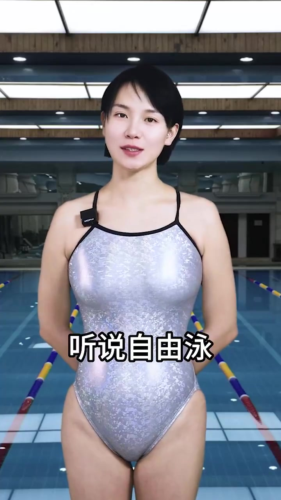
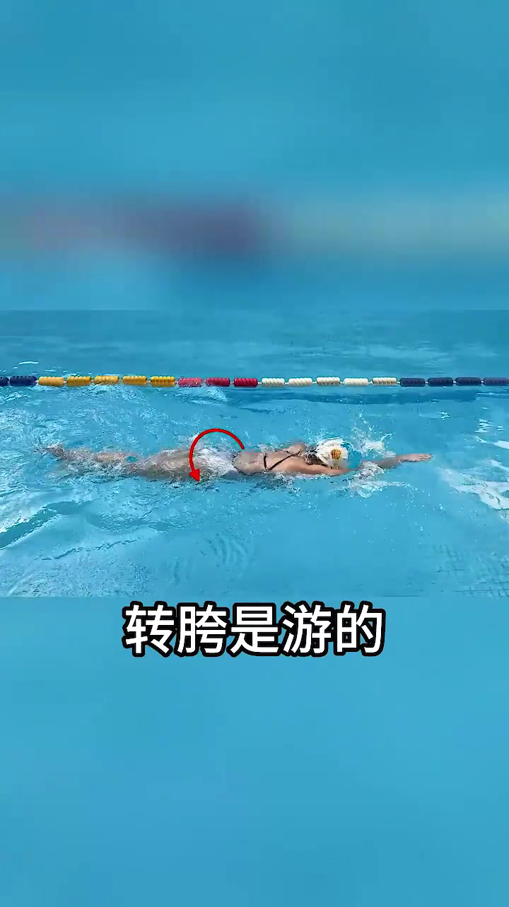
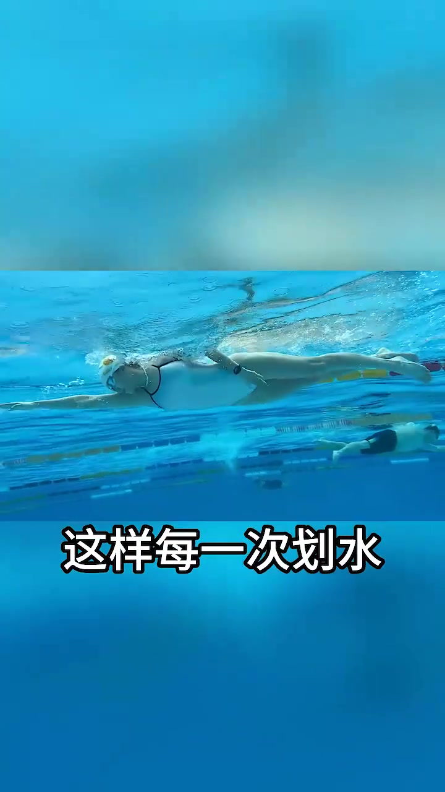
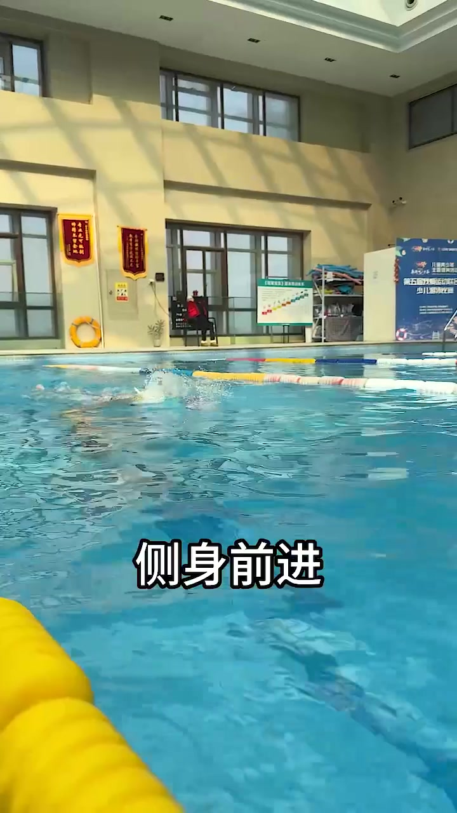
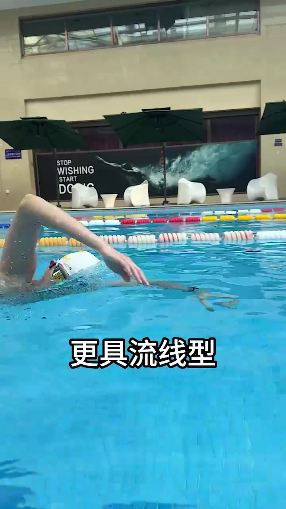
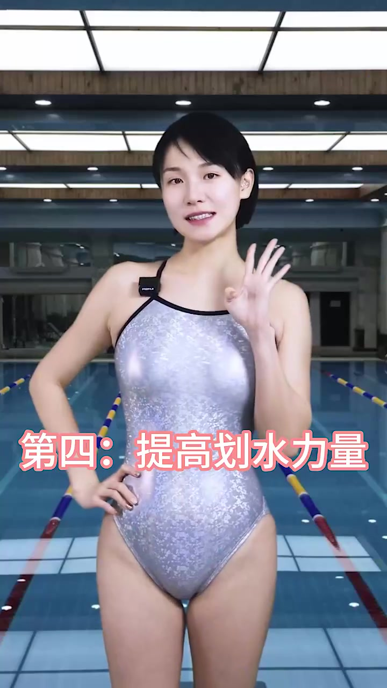
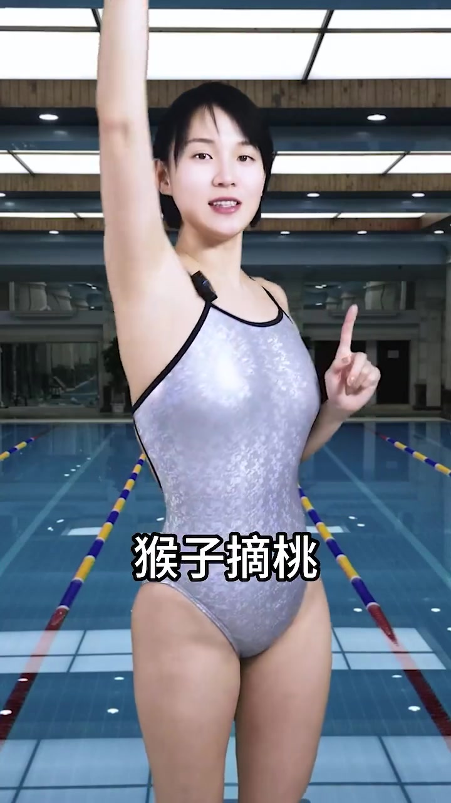
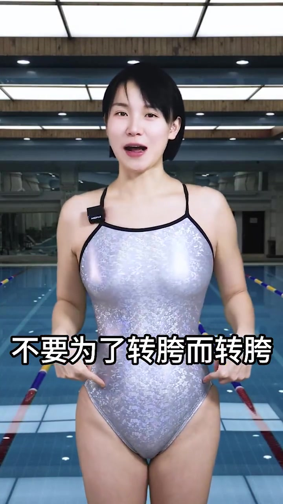

开场 · 00:00–00:06
同学问：自由泳要转胯才好，对吗？
视频一开始，穿银色连体泳衣的教练站在泳池边，字幕打出「同学问：要转胯才好，对吗」。她干脆回答「那必须是」，紧接着给出结论：转胯能让自由泳游得更好更轻松。镜头随后切到水下侧拍，一位戴白帽的泳者正在自由泳，胯部位置被红色圆圈圈出，直观点出「转胯」具体指哪个部位的动作。


理由一 · 00:06–00:11
提高效率：转胯让每一次划水都推得更远
字幕打出「第一：提高效率」，画面切到水下正面视角。口播解释：通过转胯，手划得更长，这样每一次划水都能推得更远——转胯不是孤立的下肢动作，它把手臂的划水距离也一起拉长了。

理由二 · 00:11–00:20
减少水阻：手前伸时转胯，身体拉得更长
第二条理由是减少水阻。字幕解释链路：手前伸时转胯 → 身体拉得更长 → 侧身前进 → 肩膀出水，更具流线型。镜头拉远，从岸上俯拍泳道，能看到泳者划水时身体明显侧转、贴着水面滑行，减少了正面迎水的阻力面积。


理由三 · 00:20–00:25
呼吸更容易：胯转带动头转
第三条理由篇幅很短：胯转会带动头转，头因此更容易转出水面完成呼吸。这条理由没有单独的强调画面，紧接着水下镜头继续演示划水动作，把呼吸这一点自然地嵌在整套转胯动作链里，而不是单独停下来讲解。
理由四 · 00:25–00:31
提高划水力量：用核心肌群发力，比只用胳膊有劲多了
字幕「第四：提高划水力量」出现时，教练回到岸边镜头前，比出一个 OK 手势。她解释：转胯能利用核心肌群发力，这样划水比只靠胳膊要有劲多了。紧接着画面回到水下，展示核心带动手臂划水的整体发力过程。

纠偏 · 00:31–00:43
转胯的要点：不是故意去扭，而是「猴子摘桃」式的自然结果
讲完四条好处后，教练话锋一转，给出全片最重要的提醒：转胯的要点，可不是故意去扭你的胯。她举了个生活化的比喻——就像你要够高处的东西，做一个「猴子摘桃」的动作，手臂尽量向上向前伸展，胯是不是就自然转了？这时候真正在做的是利用身体的合力去推水，胯不转都不行，而不是先决定「要扭胯」再去扭。

反例对比 · 00:43–00:48
如果没有这个动作：伸手抱水不够远，推水发力不充分
紧接着教练给出反面对照：如果没有转胯这个动作，伸手抱水就不够远，推水发力也不充分。这段没有配单独的示范画面，而是承接上一段的「猴子摘桃」演示，用同一个人、同一组镜头把「有转胯」和「没有转胯」的效果差异直接讲清楚，让理由与纠偏首尾呼应。
结语：不要为了转胯而转胯，下课
教练最后总结：所以自由泳转胯，不是扭扭屁股就好了，不要为了转胯而转胯。说完笑着比了个「1」的手势，说了句「下课」，53 秒的短视频到此结束。整段内容像一堂浓缩的泳池小课：先肯定转胯的价值，用四条理由拆解原因，再用一个生活化比喻纠正「主动硬扭」的误区。
